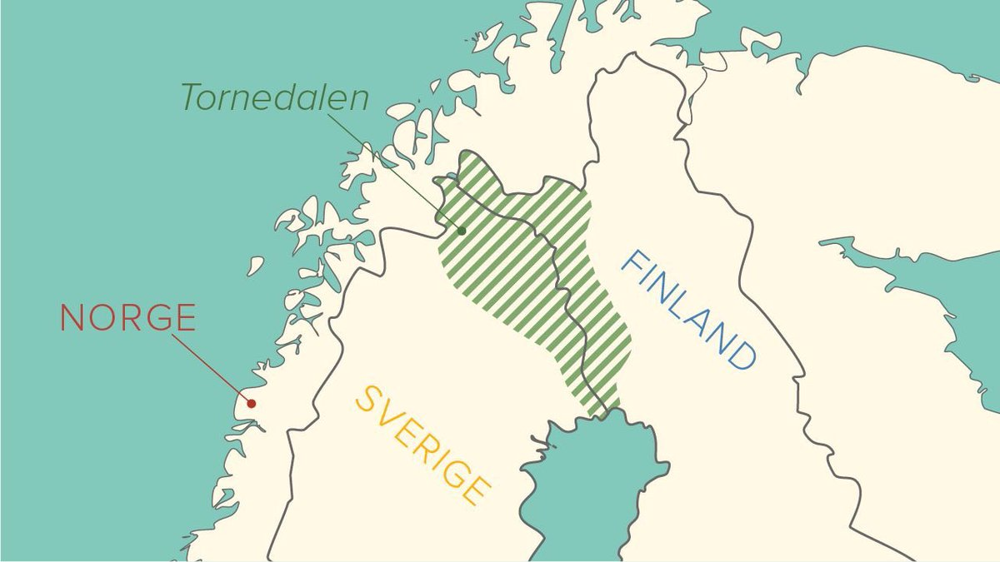
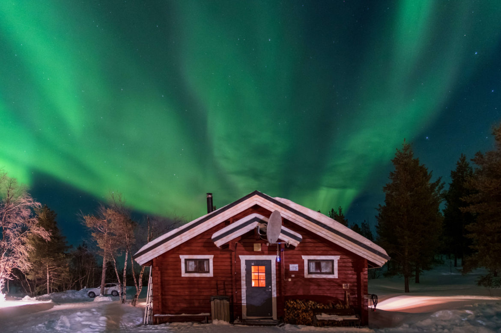
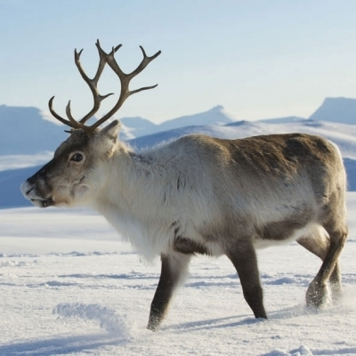

Keitä met olemma?
Suomen kieltä oon ruukattu puhua Tornioväylässä jo tuhat vuotta. Osassa Torniolaaksoa suomen- ja saamenkieliset elit yhessä ja sekotuit. Ko raja veethiin Torniojokheen vuona 1809, monia suomenkielisiä jäi Ruottin puolele. Aluksi suomen kielellä oli rohki hyä status Ruottissa. Haaparannassa toimi suomenkielinen opettaja seminaari. Kaikki muuttui 1800-luvun lopula ko Ruotti aloitti assimileerinkipulitiikan. Tällöin suomen kielen puhuminen kielethiin ja opetuskielenä alethiin käyttämhään ruottia. Kläppiä rankasthiin jos het puhuit suomea koulussa. Osa kläpeistä lähätethiin "työtuville", jossa oli huonot oltavat ja sieläkin suomen kieli kielettyä.
Meänkieliliike alkoi 1980-luvula. Suomen kieli tuli taas oppiainheeksi vuona 1970, mutta opetuksessa ilmeni varsin ongelmia / probleemia. Se suomen kieli mitä kläpeile opetethiin oli vierasta. Päätethiin että alethaan opettamhaan sitä kielimuotoa mitä het puhuit kotona.
Meänkieli sai staattyksen Ruottissa vuona 2000. Sillä oon oikheus saa'a palvelua viiessä Norrbottenin kunnassa. Lain mukhaan meänkielen kielialuheela oon oikeus saaha opetusta kouluissa. Ruottin valtion tehtävänä oon eistää meänkieltä ja sen kulttuuria. Yhistyksemme eistää meänkieltä julkaisemalla kirjallisuutta meänkielelä ja lisäämällä tietosuutta meänkielestä. Järjestämmä / oornaama seminaaria ja koulutuksia aiheesta niin ruottiksi ko kirjasuomeksi.